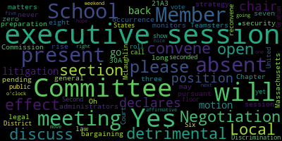

[Ruseau]: never missed on.
[Lungo-Koehn]: Yes. Oh, here, never so present may long occurrence present seven present zero absent please rise. Negotiation is in legal matters executive session pursuant to general law 30 a section eight, a three. School Committee will convene an executive session to discuss strategy and preparation for negotiations with Teamsters Local 25 security monitors and Local 25 administrators because an open meeting will have a detrimental effect on the bargaining position of the committee and the chair so declares. Also, Chapter 30A, Section 21A3, School Committee will convene an executive session to discuss pending litigation before the Massachusetts Commission Against Discrimination. and United States District Court, since an open meeting will have a detrimental effect on litigation position of the committee and the chair so declares. Member School Committee will reconvene in public session after that. Is there a motion on the floor to go into executive session? Motion to go to executive session by Member McLaughlin, seconded by? Second. Member Graham, roll call please.
[Ruseau]: Member Graham.
[Lungo-Koehn]: Yes.
[3gvhm0AovZU_SPEAKER_43]: Member Hays.
[Lungo-Koehn]: Yes.
[3gvhm0AovZU_SPEAKER_43]: Member Kreatz. Yes.
[Ruseau]: Welcome back to her member McLaughlin. Remember my stone.
[Lungo-Koehn]: Yes.
[Ruseau]: Remember so yes Marilyn go current.
[Lungo-Koehn]: Yes.
[Ruseau]: Remember, his Democrats back, Democrats.
[Lungo-Koehn]: Not back yet show just my absent for this vote. Six the affirmative one absent, we're going to move to executive session and hope to be back right about five o'clock for our next meeting. Have a nice weekend.
[3gvhm0AovZU_SPEAKER_43]: Yeah, this nice weather. Oh my gosh. That's the way to do it, sure. I'm going to start there.
|
total time: 0.15 minutes total words: 25 |
total time: 1.5 minutes total words: 207  |
||
{kind=link}
{kind=link}